Configure Once
These steps are normally done at go-live and rarely revisited. Each new product needs a weight, each new vehicle needs a record, and the vehicle categories define our weight limits.
Set the product weight (every SKU)
Login as Sejal (or Admin)
Navigate Sales app → Products tab → Products.
- Open the product record.
- Click the Inventory tab.
- Set the Weight (kg) — accurate to the kilogram. This is the value Odoo sums up per batch to compare against vehicle capacity.
- Click Save.
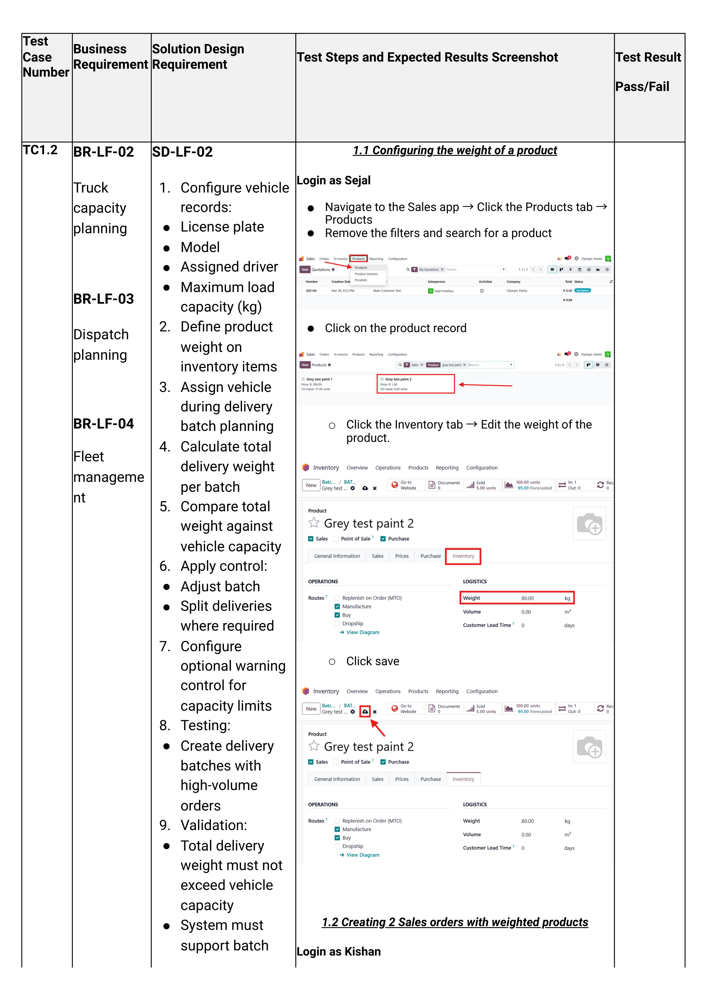
If a 20L drum is recorded as 1 kg, Odoo will let you load 5 tonnes of paint into a 1-tonne bakkie without warning. Audit product weights any time a packaging change happens.
Create a vehicle category
Categories group vehicles by capacity (e.g. "1-Tonne Bakkie", "3-Tonne Truck", "8-Tonne Truck"). Each category has a max weight which Odoo enforces when batches are built.
Login as Logistics Olympic Paints
Navigate Fleet app → Configuration tab → Categories → click New.
- Category name — e.g. Truck — 3-Tonne.
- Max weight — in kilograms (e.g. 3000).
- Max volume — optional, only if volume is a constraint for some routes.
- Click Save.
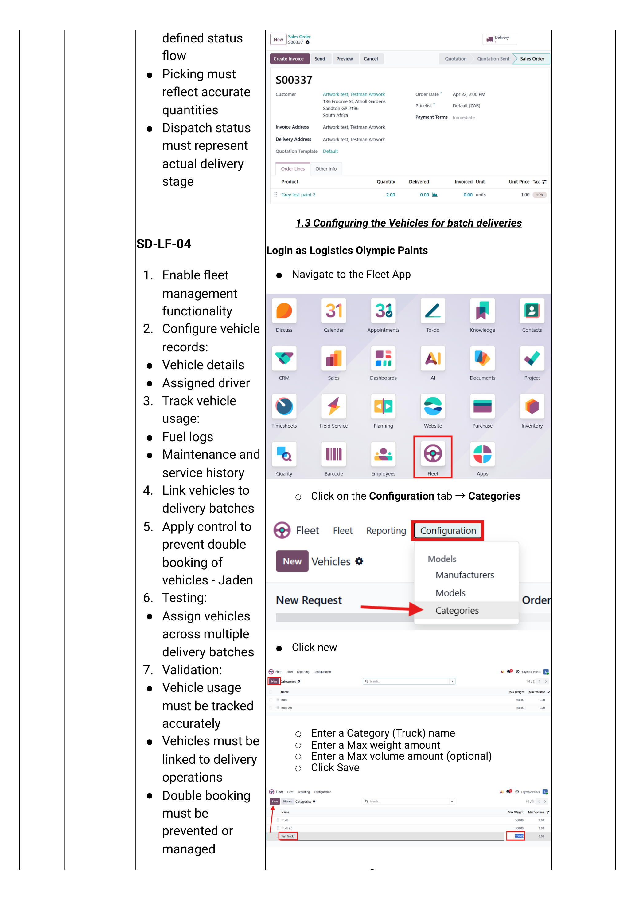
Create a vehicle model
Models are reusable templates (e.g. "Toyota Hilux 2.4 GD-6"). Each model is linked to a category.
Navigate Fleet app → Configuration tab → Models → click New.
- Model Name
- Manufacturer
- Vehicle Type (Car / Bicycle / Other — usually Other for trucks)
- Category — choose the category created in Step B.
- Click Save.
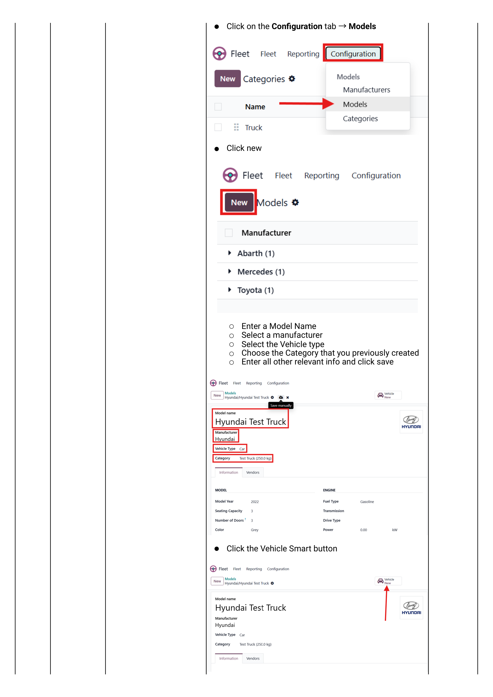
Add the actual vehicle
Navigate Fleet app → Fleet tab → Fleet → click New.
- Model — the model created in Step C. The category auto-populates.
- License Plate
- Driver — the user account of the assigned driver. (Optional Future Driver for handovers.)
- Fleet Manager — typically Logistics Olympic Paints.
- Click Save.
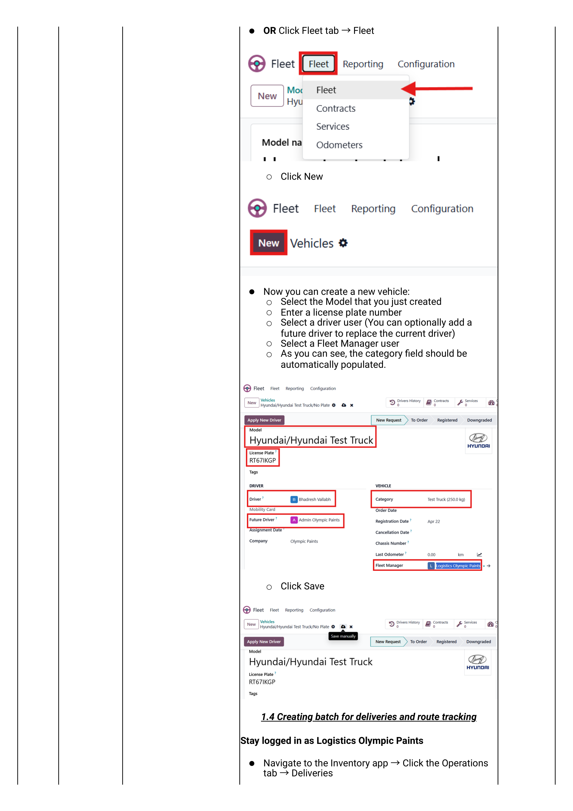
Each driver needs an Odoo user account so they can be selected here. If a driver leaves, deactivate the user — they will no longer appear in the driver dropdown but historic batches keep their attribution intact.
Find the Orders to Deliver
Start of every dispatch shift. Open the deliveries list, filter to today's confirmed orders, and group by area before building batches.
Open the deliveries list
Login as Logistics Olympic Paints
Navigate Inventory app → Operations tab → Deliveries.
You see every WH/OUT record currently in the system: Draft, Ready, Done and Cancelled.

Sort & filter by area
The goal is to find deliveries going to the same town / suburb so they can be grouped into one trip.
- Click the Scheduled Date column heading to sort by date — newest first.
- Click the Street, Street 2, City or State column heading to sort/filter by address.
- Use the top-right search box to filter by city (e.g. type "Polokwane").
- Confirm the status filter is Ready — only Ready deliveries can be batched.
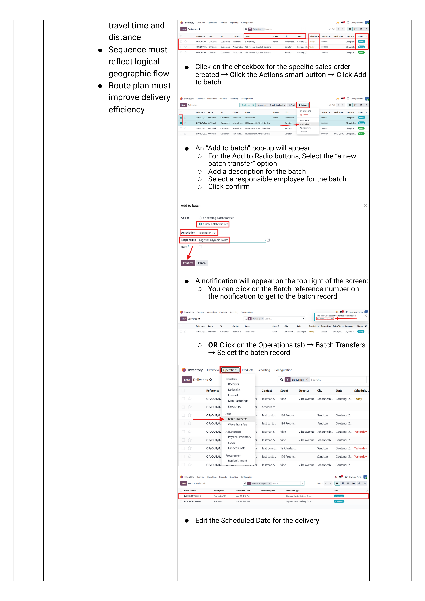
Build the Batch
Pick the orders going to the same area, add them to a new batch, set the scheduled date, and visualise the route on a map.
Add deliveries to a new batch
- Tick the checkboxes for every delivery in the same area.
- Click Actions (top of list) → Add to batch.
- On the popup:
- Select a new batch transfer.
- Enter a Description — e.g. "Polokwane North run — 13 May".
- Select a Responsible employee (usually the driver, or the dispatcher).
- Click Confirm.
- A green toast notification appears with the batch reference — click it to jump straight to the batch.
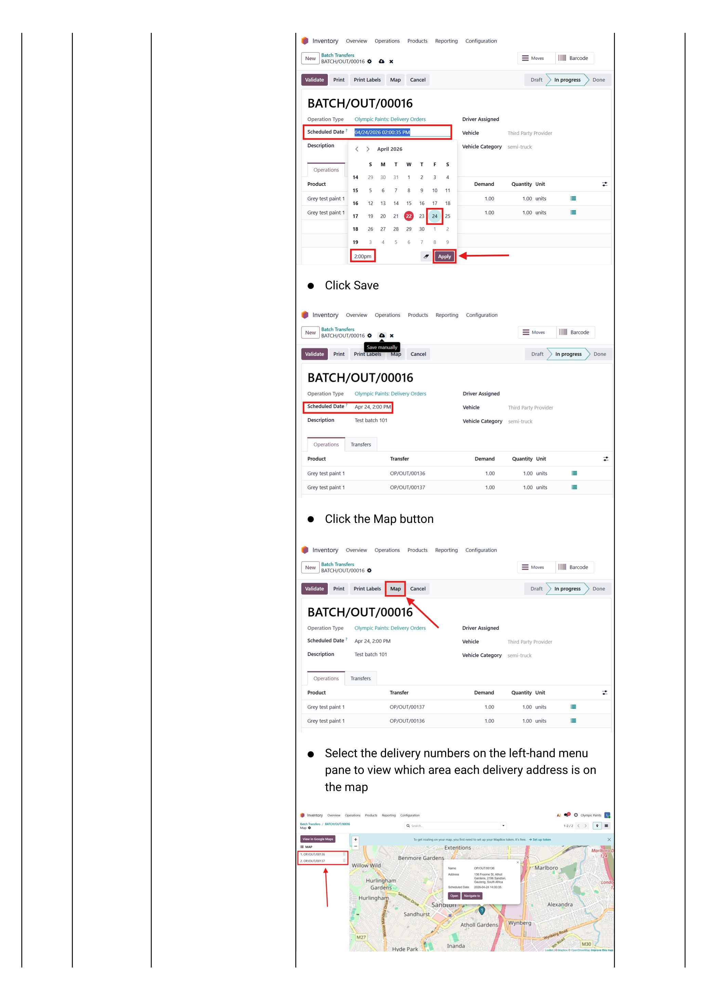
If a batch is already open for that route, choose "an existing batch transfer" on the popup instead — handy when an order is confirmed after dispatch planning starts.
Set the scheduled date on the batch
On the batch record, set Scheduled Date to the planned delivery date/time. Click Save.
Alternatively reach the same batch via Inventory → Operations tab → Batch Transfers → click the record.
View the route on a map
On the batch record click the Map button.
- The left pane lists every delivery in the batch.
- Click a delivery number — the map zooms to that delivery address.
- Click View in Google Maps to open the full multi-stop route in Google Maps — share that link with the driver's phone for turn-by-turn navigation.
Assign & Dispatch
Pick the driver, pick the vehicle, check that the load fits, and validate the batch to mark it dispatched.
Assign the driver and vehicle
On the batch record:
- Set Driver — the assigned driver user.
- Set Vehicle — the truck/bakkie that will physically run the route.
- Set Vehicle Category — usually auto-fills from the vehicle's model.
Check the weight capacity
As soon as a vehicle is assigned, Odoo:
- Sums the product weight × quantity across every line in every delivery in the batch.
- Compares it to the vehicle category's Max weight.
- Shows the result as a percentage of capacity on the batch.
Below 100% — proceed to Step 9 to validate. At or over 100% — go to Step 8 to handle the overage.
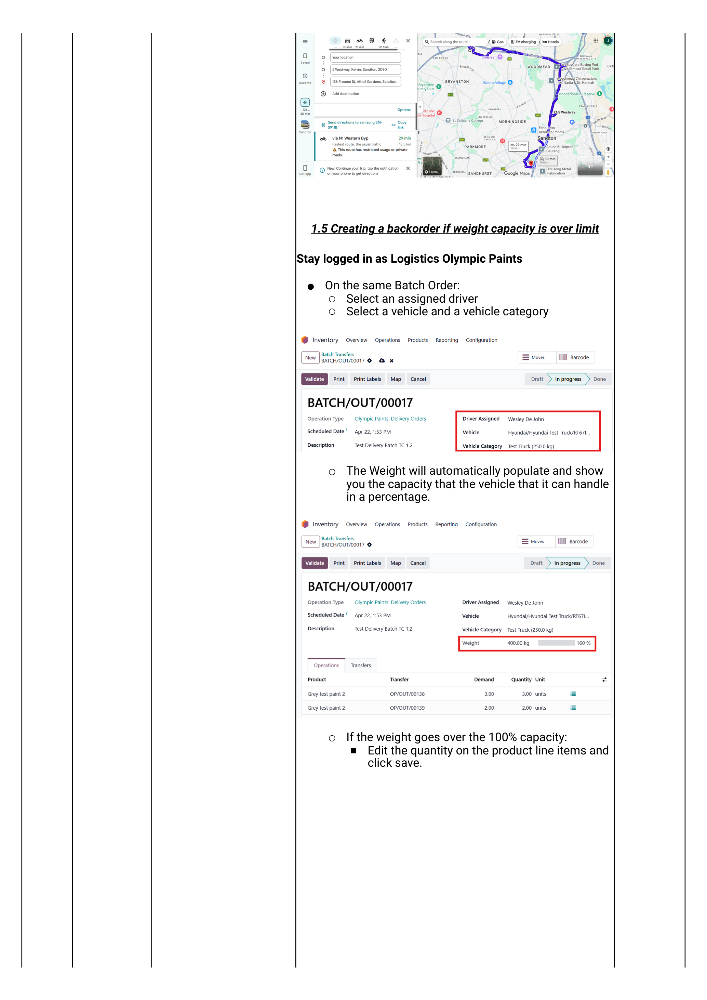
Over capacity — create a backorder
The trick: reduce the line quantities on the over-capacity delivery to what the truck can actually carry, then create a backorder for the rest.
- On the batch, expand the delivery line that puts you over capacity.
- Edit the Quantity on that line down to a number that brings total batch weight under 100%.
- Click Save.
- Click Validate on the delivery.
- The Create Backorder? pop-up appears — click Create Backorder.

Then handle the backorder:
- Navigate Inventory → Operations → Deliveries.
- Click the column-filter icon → tick Back Order of to surface the column.
- Click the Back Order of heading to sort; tick the backorder records.
- Actions → Add to Batch → fill in the popup → Confirm.
- Open the new batch → assign a different vehicle + driver → Validate.
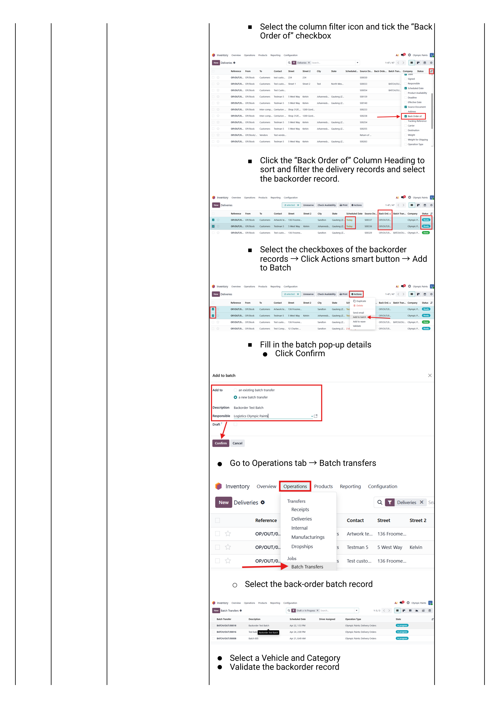
Validate & dispatch the batch
Once driver, vehicle and capacity are correct:
- Click Validate on the batch.
- The status moves: Draft → Ready → Dispatched (manually marked) → Done (once driver returns and individual deliveries are validated).
- Stock decrements as each individual WH/OUT in the batch is validated by the driver / on driver return.
- Locks the deliveries into the batch (no more additions).
- Records the driver + vehicle + scheduled date for reporting.
- Generates the consolidated batch picking slip you can print for the driver.
Edge Cases
Situations that come up regularly: double-booking the same truck, and using an outside courier.
Double-booking prevention
Odoo does not block double-booking out of the box — it relies on the dispatcher noticing. The discipline:
- Before assigning a vehicle to a new batch, check the existing batches it's on.
- Navigate Inventory → Operations → Batch Transfers.
- Filter by the vehicle (or by date) — if the truck is already booked at an overlapping date/time, the dispatch will collide.
- If the windows do not overlap (e.g. AM run vs PM run), proceed.
- If they do overlap, either re-shuffle batches or pick a different driver/vehicle.
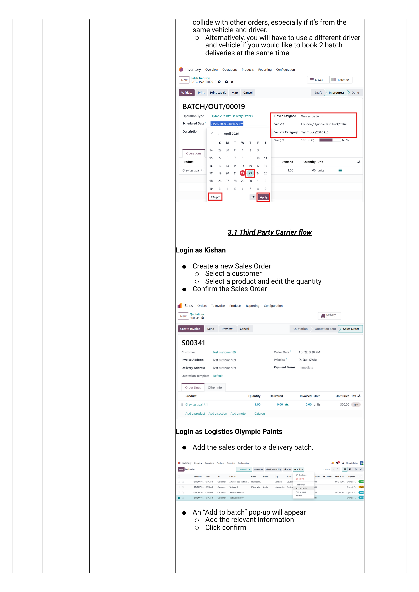
There is no hard system block. Use the Calendar / Gantt view on Batch Transfers to spot overlaps visually before confirming the assignment.
Third-party carrier flow
When delivery is outsourced (e.g. an external courier picks up at our warehouse and runs the drop):
- Build the batch normally with the deliveries.
- Leave the Driver, Vehicle and Vehicle Category fields blank on the batch — these are for our own fleet only.
- Click Validate on the batch and on each delivery as the courier collects.
- Capture the courier's bill in Accounting:
- Login as Kishan
- Accounting → Vendors tab → Bills → New.
- Add the courier as Vendor.
- Set Bill reference and Bill date.
- Add an invoice line for the delivery expense + amount.
- Click Confirm.
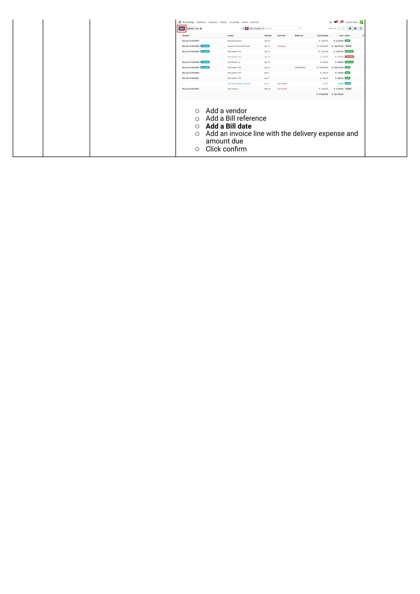
Reporting
Once batches are running, three reports answer the operational questions: who delivered how much, which vehicle did which routes, and which deliveries are still outstanding.
Vehicle & driver reports
Navigate Inventory → Operations → Batch Transfers.
- Click the filter icon → remove the default filter → select Vehicle as the filter dimension.
- Switch between List / Kanban / Gantt / Graph / Pivot / Calendar views with the icons in the top right.
- For driver-level reporting: clear the filter and re-filter by Driver.
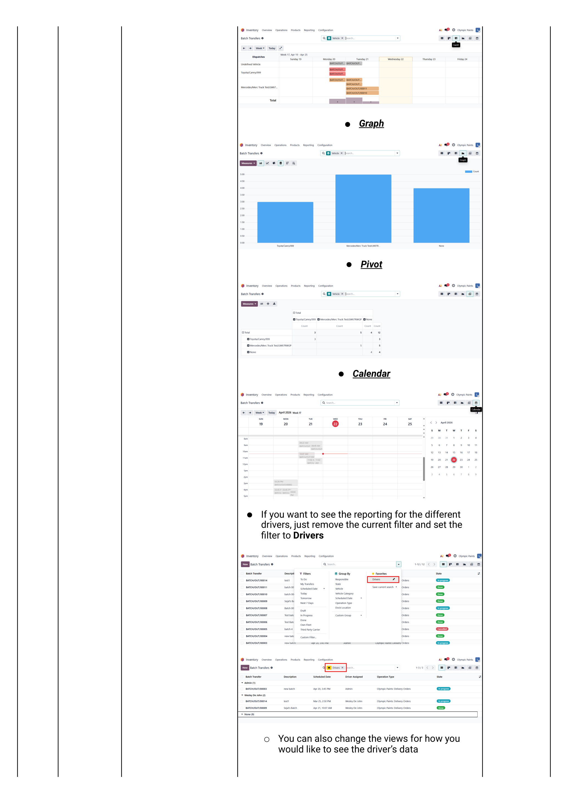
Moves History — by batch transfer
For the detail report of what stock actually moved on each batch:
- Navigate Inventory → Reporting → Moves History.
- Keep the default Done filter.
- Click the filter icon → select Batch Transfer.
- List view shows every batch's delivery count and quantity. Switch to Kanban or Pivot for summary views.
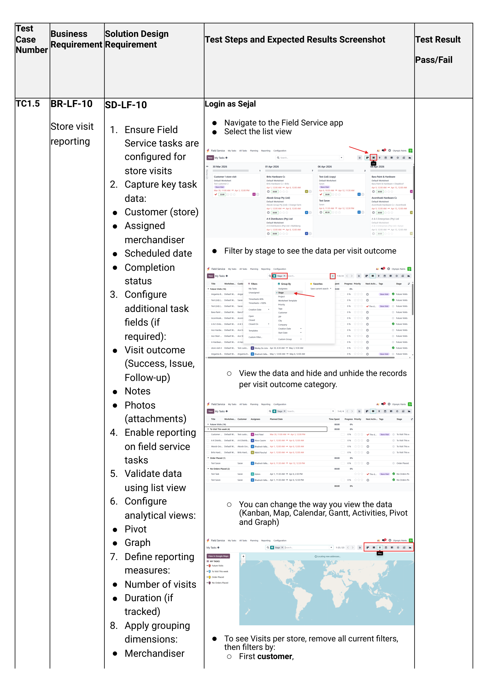
- How many deliveries did each driver complete this week? Batch Transfers → Filter Driver → Group by Week → Pivot.
- How much stock did the 3-tonne truck move last month? Moves History → Filter Vehicle → Group by Month → Pivot.
- Which deliveries are still outstanding? Deliveries → Filter Status = Ready.